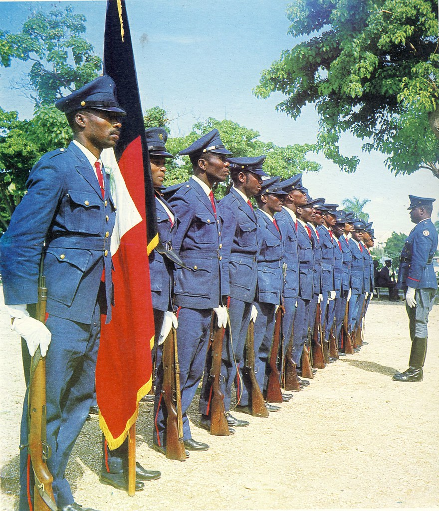
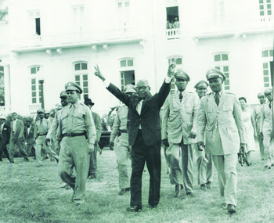
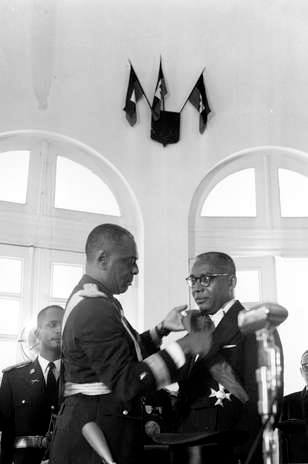
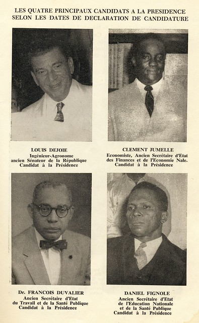
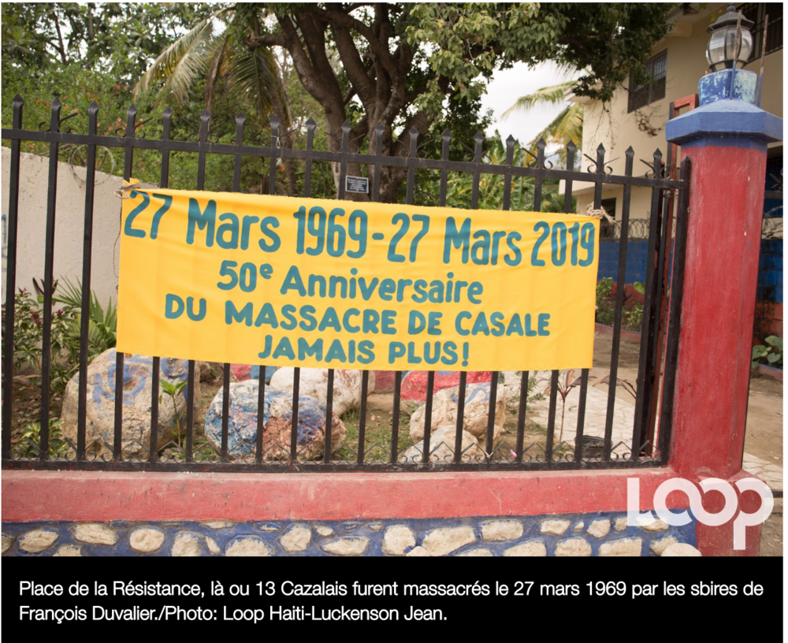

« Il ne faut pas s'y tromper, cette histoire annonce des massacres. »
Jacques Stephen Alexis« L'histoire d'Haïti est d'une dimension impressionnante. Car elle s'est forgée dans le sang d'un peuple, habitué dès sa naissance à lutter et à mourir pour défendre ses droits. »
Nicolás Guillén, poète cubainÀ son arrivée au pouvoir, François Duvalier organisa la mise à mort de toute opposition. En commençant par ses adversaires de la récente élection présidentielle.
Cependant, comme de coutume, François Duvalier récemment élu se présentera comme l'homme de la rupture, celui qui allait mettre de l'ordre dans les affaires de l'État grâce à une gestion honnête. « … Dans cette compétition se dressent d'un côté l'honnêteté, la probité, le respect des valeurs morales et de l'autre côté le produit du vol, de la concussion et des prébendes… (les) fortunes scandaleuses amassées dans le marchandage crapuleux, les transactions dégoûtantes et les concessions antinationales… » [1] Hélas ! [2]

Mais il faut tout de suite rappeler qu'une répression sanglante s'était abattue sur les partisans de Fignolé avant même les élections du 22 septembre 1957, orchestrée par des officiers duvaliéristes sous la direction de Antonio Th Kébreau, dont, Jacques Laroche, John Beauvoir, Joseph Lamarre, Edner Nelson, Claude Raymond, Max Dominique, Deslandes Duperval, Franck Romain et Pressoir Pierre. [3] Un millier au moins d'habitants du Bel-Air, du Morne à Tuf, de La Saline, de la Croix des Bossales furent mitraillés dans la nuit du 15 au 16 juin 1957 [4] — sans compter des centaines de blessés — parce qu'ils protestaient contre le renversement de leur leader, le professeur Daniel Fignolé.
Le 1er octobre 1957, la loi martiale est décrétée et le couvre-feu instauré à partir de 8 h du soir. Par la suite, le journal Le Matin signale de nombreuses arrestations à Port-au-Prince au début du mois d'octobre 1957. Ce journal dénonce dès la mi-novembre, soit moins d'un mois après l'investiture de Duvalier, « les arrestations massives » à Port-au-Prince et à St-Marc et donne quelques noms : l'ex-préfet René Laforêt, Charles Jumelle, William Destin, Ryswick Jean, Fritz Antoine, Surpris Innocent, Clovis Bonhomme, Lydéric Bonaventure, Marcel Dougé. [5] Et quelques jours plus tard, Antonio Vieux, Michel Roumain, Étienne Charlier. [6] Peu de temps après, Georges Petit Fils, Franck Séraphin, finalement portés disparus.

La presse d'opposition vit ses journaux fermés : dès le 18 novembre 1957, le journal du groupe de gauche, Alliance Démocratique, l'Haïtien Libéré, fut fermé et ses journalistes emprisonnés. Puis vint le tour de : Le Mopisme intégral, d'obédience fignoliste, Indépendance, proche de Louis Déjoie, Le Patriote, de tendance jumelliste, Foi sociale et Haiti-Miroir, plus indépendants. [7] Le local du quotidien Le Patriote reçut deux grenades, faisant deux blessés dont l'un perdit la vue. [8]
En janvier 1958, soit trois mois après l'investiture de François Duvalier, Yvonne Hakim Rimpel, figure respectée de la Ligue féminine d'Action Sociale et directrice du journal l'Escale, sera enlevée de son domicile en présence de ses jeunes enfants, sauvagement maltraitée et laissée pour morte sur l'autoroute de Delmas. Yvonne, issue de la bourgeoisie de Port-au-Prince, avait appuyé la candidature de Louis Déjoie. Franck Romain fut identifié comme l'un de ses bourreaux.
Le cadavre du commissaire du gouvernement Odnell David fut découvert sur les trottoirs du Palais de Justice en juin 1958. Il était taxé de communiste. Le rapport officiel fit état d'un suicide. [9]
Les frères Ducasse et Charles Jumelle seront liquidés le 20 juillet 1958 par la police politique du nouveau pouvoir, en dépit du fait que le premier avait aidé financièrement la famille de Duvalier en difficulté pendant le gouvernement Magloire. [10]
Leur frère, Clément Jumelle, candidat à la présidence, contre lequel un mandat d'arrêt a été décerné, a dû prendre le maquis et se réfugier dans l'ambassade de Cuba où il mourra d'une crise d'urémie un an plus tard. [11] Son cadavre sera spectaculairement enlevé par la police politique du régime lors de son enterrement. Personne ne sut ce qu'il en est advenu.
Et vinrent les initiatives de la droite dite libérale pour renverser par les armes ce qui s'annonçait comme une dictature féroce. L'un des premiers mouvements sera le débarquement de trois anciens officiers de l'armée d'Haïti : Alix Pasquet, Philippe Dominique et Henri Perpignand, accompagnés de cinq mercenaires américains, le 29 juillet 1958.
Ces mouvements — sauf exception — seront dirigés en général par d'anciens militaires et des politiciens traditionnels en exil. Certains étaient sincèrement préoccupés par la situation du pays, les autres étaient guidés par leur ambition politique. La plupart de ces initiatives trouveront l'appui financier des américains. Et presque tous cherchaient un simple changement de président et de gouvernement. Ils échouèrent dans leur entreprise pour de multiples raisons. À commencer par l'absence de réseaux de partisans organisés, donc de solides contacts de terrain et la carence d'une compréhension profonde des problèmes du pays. Il faudrait aussi noter le déficit d'une planification qui tiendrait compte des conditions objectives et subjectives de succès de telles entreprises. Sans compter le rôle ambigu des américains trop souvent partie prenante de ces aventures.
Profitant de l'invasion des anciens officiers de l'armée en 1958, François Duvalier créa le corps des tontons macoutes sous l'appellation officielle de Volontaires de la Sécurité Nationale (VSN), pour terroriser la population, liquider ceux qu'il considérait comme ses ennemis et servir de contrepoids à l'armée. Les macoutes provenaient pour l'essentiel des couches appauvries du lumpenprolétariat et du lumpenpaysannat. Les classes sociales les plus arriérées au plan politique. On retrouvera aussi dans cette organisation criminelle une mince couche de notables, avides de pouvoir, de privilèges et de richesses. « Au sein de l'organisation se forment des bandes de tueurs professionnels qui assassinent, volent, extorquent, sans avoir de compte à rendre à personne. Parmi les plus immondes chefs de bandes se détachent les noms de : Clément Barbot, Luc Désir, Lucien Chauvet, Edner Day, Zacharie Delva, Astrel Benjamin, André Simon, Mme Max Adolphe, Ti Bobo, Taillefer, Pageotte, Boss Pinte, Eloys Maître, Adherbal Lhérisson… » [12] Et, dans un pays soumis à la faim, au chômage, à l'analphabétisme et aux préjugés divers notamment de couleur, la démagogie populiste puis fascisante trouvera un terreau fertile pour asseoir son pouvoir.
Aux macoutes furent donc octroyés le droit de vol, de vie et de mort sur le menu fretin et les ennemis désignés par Papa Doc et ses thuriféraires. Ils contrebalançaient le pouvoir de l'armée d'Haïti et protégeaient avec fanatisme celui qui leur octroyait l'illusion de la puissance. L'organisation de ce corps parallèle reçut la bénédiction de l'administration américaine. « Leur formation technique avait été assurée par la mission militaire américaine et les officiers de confiance de Duvalier ». [13]

C'est dans ce contexte politique difficile que le Parti d'Entente Populaire (PEP) prend naissance en 1959. L'allure de la répression force déjà l'organisation à garder la clandestinité. Prophète, Jacques Stephen Alexis son fondateur signalait très tôt : « Il ne faut pas s'y tromper, cette histoire annonce des massacres. » Et après l'arrestation de l'écrivain haïtien de renom Jean Brierre en 1959, il dénoncera l'étendue de la répression dans une lettre à Evguenia L. Galperina, de la section étrangère de l'Union des écrivains de l'URSS (l'Union des Républiques Socialistes Soviétiques). [14]
Un peu plus tôt, en 1954, des militants issus de courants marxistes dont Jean-Jacques Dessalines Ambroise, Mario Rameau, Michel Hector et des anciens du Parti Socialiste Populaire (PSP), fonderont le Parti Populaire de Libération Nationale (PPLN) qui prendra plus tard l'appellation de Parti Union des Démocrates Haïtiens (PUDA).
Le duvaliérisme consacra le réaménagement du bloc dominant initié sous Estimé, scellant l'alliance d'une fraction de la petite bourgeoisie intellectuelle (Joseph Baguidy, Mesmin Gabriel, René Piquion, Emile St-Lôt, Roger Dorsinville, Louis Diaquoi, Paul et Jules Blanchet, Hervé Boyer, etc.) avide de partager les privilèges et les prébendes avec l'élite traditionnelle ; des grands propriétaires fonciers et des grands spéculateurs (Weber Kersaint, Fritz Moïse, Charité Louis, Jean Julmé, André Simon, Clémard Joseph Charles, etc.) ; avec la bourgeoisie commerçante syro-libanaise (Baboun, Deeb, Saliba, Kawly, Boulos, Acra, Jaar, Assali, Attié, etc. [15]), fraction combattue longtemps par la bourgeoisie traditionnelle haïtienne.
Les organisations civiques furent dissoutes très tôt. L'UNMES (l'Union Nationale des Maîtres de l'Enseignement Secondaire), le 12 août 1959 ; l'AEB (l'Association des Employés de Banques) dirigé par Joseph Châtelain. Le 22 novembre 1960, le ministre de l'intérieur Aurèle Joseph instaure la loi martiale, [16] dissout l'UNEH (l'Union Nationale des Étudiants Haïtiens) ainsi que toutes les organisations de jeunesse et interdit toute réunion. Les laboratoires de chimie des lycées de la capitale furent également fermés. Les revendications des professeurs et la grève des étudiants avaient été qualifiées de mouvements communistes par le pouvoir qui espérait de la sorte bénéficier des bonnes grâces des américains. [17] Surtout dans le contexte de l'éclatante victoire des révolutionnaires cubains sous la direction de Fidel Castro. À la fin de 1963, l'Union Intersyndicale (UIH) est décapitée. Ses 13 dirigeants emprisonnés dont Ulrick Joly, Président de l'UIH, et son adjoint, Rodolphe Moïse. [18]
L'année 1964 marque un tournant dans la vie politique du pays. Papa Doc devient président à vie. Le fascisme néocolonial prend ses quartiers en Haïti. Et c'est « l'instauration pure et simple du banditisme officiel ». [19] La répression aiguise ses griffes acérées. D'autant plus que différents secteurs sociaux n'ont pas renoncé à lutter contre cette dictature sanguinaire qui de surcroît enfonce le pays dans la misère et la crasse.
Si le duvaliérisme s'est caractérisé par une répression démentielle et le terrorisme d'État, cela est dû dans une bonne mesure à l'option même de ce pouvoir de conserver per fas et nefas le statu quo, et de défendre le petit groupe de supporteurs, anciens et nouveaux, malgré la crise économique sévère et la misère grandissante. Il faut le dire aussi, sans toucher aux intérêts stratégiques des américains. Bien au contraire, Papa Doc et ses thuriféraires brandissaient régulièrement la bannière de l'anticommunisme, si chère aux américains en période de guerre froide. Le régime se devait d'empêcher par tous les moyens l'émergence et l'expansion des forces associatives socio-économiques et politiques revendicatives, susceptibles de remettre en cause ce pouvoir rétrograde et tout le système de rentes en décomposition.
Car la situation générale allait en se dégradant. La chute de l'économie caféière est spectaculaire. L'arbitraire ambiant, associé aux politiques anti-développement [20] ruinent non seulement les caféiculteurs, mais aussi les planteurs de vivres alimentaires et de produits maraîchers ainsi que les producteurs de divers secteurs de l'agro-industrie, notamment le secteur sucrier [21] et celui des huiles essentielles. Les dépossessions paysannes et le retour de la corvée dans l'Artibonite, la plaine du Cul de Sac et l'Arcahaie [22] soulèvent la grogne des agriculteurs. « Quant aux paysans, ce noir, prétexte du combat pour le plus grand nombre, il s'est trouvé plus que jamais trituré par les hommes nouveaux, une "élite l'orage calé" sans tradition de bonté, de générosité, de solidarité, acharnée à se laver du souvenir de son abjection de naguère… » [23] L'économie du pays s'effondre. Il a été noté dans un article de la revue Conjonction que Haïti fut le seul pays de l'Amérique qui ait eu un taux de croissance per capita négatif entre 1966 et 1969. [24] D'autres études soulignent la croissance négative de l'économie haïtienne entre 1960 et 1970. [25] Le pays de toute évidence faisait marche arrière comme le signalera plus tard Roger Dorsinville, repenti d'avoir appuyé l'arrivée de François Duvalier au pouvoir.
Pour la seule année 1964, environ 600 paysans furent exécutés et jetés dans des fosses communes dans les zones de Belle-Anse, Thiotte et Mapou. [26] Et Jérémie connut la nuit de Cristal avec l'assassinat de 27 personnes de trois familles. Dans les deux cas, cette barbarie ne relevait pas de simples crimes politiques. Il s'agissait surtout pour ces brigands de faire main basse sur les terres des paysans assassinés ainsi que sur les scieries de la Forêt des pins d'un côté, et de l'autre, de remplacer les exportateurs de café et de cacao de Jérémie exécutés par de nouveaux agents économiques proches du régime.
Sous François Duvalier, en 5 mois, les lois du 19 août 1963, du 23 décembre 1963 et du 1er février 1964 prévoient des taxes additionnelles sur le café. « Aucune de ces taxes ne concerne la culture du café… et l'intégralité de la taxation repose sur les épaules de l'habitant producteur ». [27] Si 426 000 sacs de café sont exportés durant les décennies 40 et 50, seulement 311 343 sacs partiront pour la période 1967-1971, soit 115 000 sacs de café de moins. Une vague d'agriculteurs abandonne la campagne. Alors que le 28 novembre 1957, le Costa Rica rendait hommage au Dr Pierre Sylvain, spécialiste haïtien du café, pour ses travaux scientifiques et sa contribution à l'amélioration de l'industrie caféière de ce pays, le café haïtien périclite.
En 1965, la famine frappe le Sud. Les paysans affamés et ruinés liquident le bétail. La HAMPCO [28] (une entreprise américaine d'exportation de viande) achète le gros bétail à vil prix. [29] C'est l'exode vers la capitale. L'abandon de la paysannerie est tel que c'est la FAO qui a dû intervenir pour empêcher la disparition totale du cheptel bovin d'à peine 600 000 têtes.
Au début du régime duvaliériste, deux grandes entreprises minières ont commencé à fonctionner. Ce sont, en 1957, la Reynolds Haytian Mining, filiale du trust international d'aluminium, exploitant la bauxite près de Miragoâne, et la Sedren, compagnie américano-canadienne qui exploitait le minerai de cuivre de Mémé près des Gonaïves, associée au trust américain Guggenheim, en 1960. Très vite « Haïti, la nation la plus pauvre du continent, se (situera) au troisième rang des pays d'Amérique Latine producteurs d'aluminium, et au quatrième des producteurs de cuivre ». [30] De manière paradoxale, « les bénéfices tirés par l'État haïtien furent de 1963 à 1969 : G 150 300 pour la bauxite (US 30 060) et G 71 500 pour le cuivre (US 14 300) [31] ». [32] En six ans, les bénéfices obtenus par l'État haïtien de l'exploitation de nos mines représentent la modique somme de G 180 300 ! « L'industrie extractive présente tous les signes du pillage… Elle hypothèque l'avenir ». [33] La petite histoire raconte que François Duvalier aurait fait aménager une carrière camouflée pour exploiter, pour son compte, une mine d'or à la Grande Rivière du Nord, sous la haute surveillance d'un macoute notoire appelé Robert Nose. Qu'en est-il vraiment ?
Dans le même temps, le macoutisme sous ses formes les plus aberrantes et les plus révoltantes terrorise la population : interdiction de fixer la maison d'un macoute, [34] interdiction de protester si un macoute vous offense, interdiction de refuser une danse sollicitée par un macoute dans un night club, interdiction de déplacer un convoi si un macoute exige que personne ne bouge. C'était le lot des chauffeurs et des passagers à travers le pays. Un macoute tel Alfred Sixto (de l'Artibonite) [35] pouvait pour son bon plaisir retarder de cinq heures d'horloge des dizaines de camions qu'il ordonnait aux miliciens de St-Marc de fouiller. [36]
Mais il y a plus. Il s'agissait de l'instauration des contre-valeurs, de transformer l'inacceptable en acceptable. Ce fut l'institutionnalisation du vol comme nouvelle façon de s'enrichir, autorisée par Papa Doc. Permis de tuer, permis de voler. Le macoute ordinaire, le petit macoute n'achète pas, il prend de la marchande ce qu'il lui faut. L'autre versant, c'est le rançonnement systématique des commerçants et des hommes et femmes d'affaires. Des équipes d'officiers duvaliéristes se sont partagé le pays. Tous ceux qui ne sont pas expressément protégés par le pouvoir doivent casquer. Malheur à celui qui ne donne pas le montant sollicité après le délai octroyé. C'est encore les arrestations arbitraires (maquillées en arrestations politiques) de ceux qui ont prêté de l'argent (parfois des sommes importantes) aux officiers et autres macoutes, [37] ou qui possèdent des terrains convoités par des pontes du régime. Pour être élargi, il faut signer l'acte de vente en bonne et due forme et renoncer au recouvrement. La servilité est érigée en vertu civique. Caligula veut que tout le monde se prosterne à ses pieds. Luckner Cambronne, député macoute, dira à qui voulait l'entendre que le bon duvaliériste est prêt à sacrifier sa propre mère, son propre fils pour la gloire du tyran.

Face à l'effondrement de la Nation, l'ignominie, la honte, l'indignité et le recul accéléré du pays, les révolutionnaires haïtiens s'organisent. Face à la terreur fasciste, le PUCH choisit d'affronter les armes à la main ce Caligula des temps modernes.
La plupart des dirigeants du parti rentrent en Haïti dans le cadre de la préparation de la lutte armée. Beaucoup de faits les concernant sont connus. Avant même la fusion, plusieurs cadres des partis recevaient une formation théorique et pratique à l'étranger, notamment en URSS et à Cuba. Le PUCH fit appel à tous ses militants à l'occasion de cette importante mobilisation, afin d'initier ou d'intensifier le travail d'implantation des structures politiques et logistiques.
Ces tâches se réalisent en divers points du pays. Dans la Grand'Anse, la Plaine du Cul de Sac, la Plaine de l'Arcahaie, dans le Nord, le Plateau Central, l'Artibonite, la zone de Cazale et à Port-au-Prince.
Il faut prendre en compte également la lenteur de tout travail d'implantation dans un pays sans grande tradition de luttes organisées. Par ailleurs, beaucoup de cadres, issus de la petite bourgeoisie, ne maîtrisaient pas toujours le milieu d'implantation du travail politique surtout dans les zones rurales. Il faut aussi se rappeler que le PUCH n'a vu le jour officiellement qu'au mois de janvier 1969. Donc, les conditions de lancement d'une opération de guérilla se trouvaient loin d'être réunies. Il s'agissait à la fois de l'implantation politique dans des zones clés, mais aussi de la préparation d'un appui logistique fiable en ressources diverses. Aussi, le déclenchement accidentel de la guérilla de Cazale, sans les préparatifs adéquats, ouvrira-t-il à deux battants les portes de la répression. Les cadres du Parti, notamment Roger Méhu, Alix Lamaute, Néfort Victomé, ne pouvant abandonner les paysans, avec courage et détermination et sans se faire d'illusion, participeront à cette bataille et résisteront jusqu'à leur dernière cartouche.
Myrtha Gilbert
31 décembre 2019
Notes
- Le Matin, septembre 1957.
- C'est encore aujourd'hui le discours du pouvoir en place, 62 ans plus tard, hélas !
- Bernard Diederich, Le prix du sang, tome I. François Duvalier, 1957-1971, 2016.
- Alphonse Férère, officier de l'armée d'Haïti, situe le chiffre de fignolistes assassinés entre mille et 6 000 personnes. In, En grandissant sous Duvalier. L'agonie d'un État-Nation. Sous la direction de Frantz Leconte, 1999.
- Le Matin, samedi 16 novembre 1957.
- Le Matin, 22 et 28 novembre 1957.
- Gérard Pierre-Charles, Radiographie d'une dictature, Mexico, 1973.
- Bernard Diederich, op. cit.
- Bernard Diederich, op. cit.
- Bernard Diederich, op. cit.
- Idem.
- Haïti sous Duvalier, Terrorisme d'État et visages de la Résistance Nationale. Publié par l'Organisation extérieure du Parti Unifié des Communistes Haïtiens (PUCH), 1972.
- Gérard Pierre-Charles, Radiographie d'une dictature. Éditions Nouvelle Optique, Montréal, 1973.
- Entre savoir et démocratie. Les luttes de l'Union Nationale des Étudiants Haïtiens sous le gouvernement de François Duvalier ; sous la direction de Leslie J. R. Péan. Éditions Mémoire d'encrier, 2010.
- Extrait du discours de Salim Attié lors de l'inauguration du club haitiano-arabe : « … votre ascension à la première magistrature de l'État raffermit notre confiance dans l'avenir, parce que votre politique d'ordre, de paix, de travail et de progrès est une garantie sûre. »
- Bernard Diederich, Le prix du sang, 2016.
- Le lecteur consultera avec profit le livre de Henri Malfan : Cinq décennies d'histoire du mouvement étudiant haïtien, p. 32, Éditions Jeune Clarté, Montréal, New York, 1981.
- Ulrick Joly et Rodolphe Moïse, Conférence Internationale de Solidarité ouvrière (CISO), Montréal, 1975.
- Roger Dorsinville, Marche arrière II, Éditions des Antilles, 1990.
- Leslie Péan explique comment l'ancien ministre des finances de François Duvalier, Hervé Boyer, accuse les mauvaises politiques agricoles de Papa Doc d'être responsables de la baisse de production du coton, du café, du riz, de la tomate…
- Arrestation, intimidation, persécution, exécution d'industriels comme André Riobé, Forbin, Edlynn, du secteur sucrier et Louis Déjoie, principal producteur des huiles essentielles de vétiver. Main mise sur des usines d'huiles essentielles de citron aux Cayes, où Luckner Cambronne obligera un industriel à lui céder son usine ou à en faire un associé sans débours.
- Voix du Peuple, Organe du Parti d'Entente Populaire (PEP), 1er décembre 1969.
- Roger Dorsinville, op. cit.
- Revue Conjonction, décembre 1973, in Petit Samedi Soir, 14-20 septembre 1974.
- Raymond Prats, Haïti à la recherche de ses pôles de développement industriel. Un modèle d'économie extravertie, 1978.
- Claude A. Rosier, Le triangle de la mort. Journal d'un prisonnier politique haïtien, 1966-1977, 2003.
- Christian Girault, op. cit.
- Gérard Pierre-Charles, op. cit.
- Idem.
- Idem.
- Au taux de G 5,00 pour US 1,00.
- Fred Doura, Haïti — zones franches : Extraversion économique et sous-développement, 2012. Par ailleurs, la teneur en or et en argent des mines de Mémé n'ont pas été pris en compte, alors que des études ultérieures prouvèrent une teneur de 2 g/T or et 10 g/T Ag. Ce sont 3 000 kilos d'or et 15 000 kilos d'argent livrés gratuitement à la SEDREN. Si l'on fait un transfert d'époque, c'est comme si en 2018, la Reynolds Mining octroyait à l'État haïtien un misérable US 270 540 et la SEDREN, US 128 700, après 6 années d'exploitation de ces mines (1963-1969).
- Raymond Prats, op. cit.
- Lionel Fouchard, ex lieutenant des gardes-côtes, perdit la vie pour s'être garé devant la maison d'une maîtresse du colonel Jacques Gracia, le 26 avril 1963. In, Le prix du sang, op. cit.
- Claude A. Rosier, op. cit.
- Claude Rosier, op. cit.
- Adrienne Gilbert, ancienne prisonnière politique de 1969 à 1973, témoignait comment elle a eu pour compagnes de cellules des personnes arrêtées soit parce qu'elles refusaient la vente d'un terrain, ou parce qu'elles prêtaient de l'argent aux officiers. Comme Mmes Cyrille et Narcisse. Il y eut le cas d'une maîtresse de Luc Désir envoyée par ce dernier au Pénitencier National purger une peine de quelques jours, comme prisonnière politique, pour avoir désobéi à un ordre de son amant qui ne tolérait pas qu'elle porte des pantalons.
- Voix du Peuple, Organe du Parti d'Entente Populaire (PEP), 1er décembre 1969.